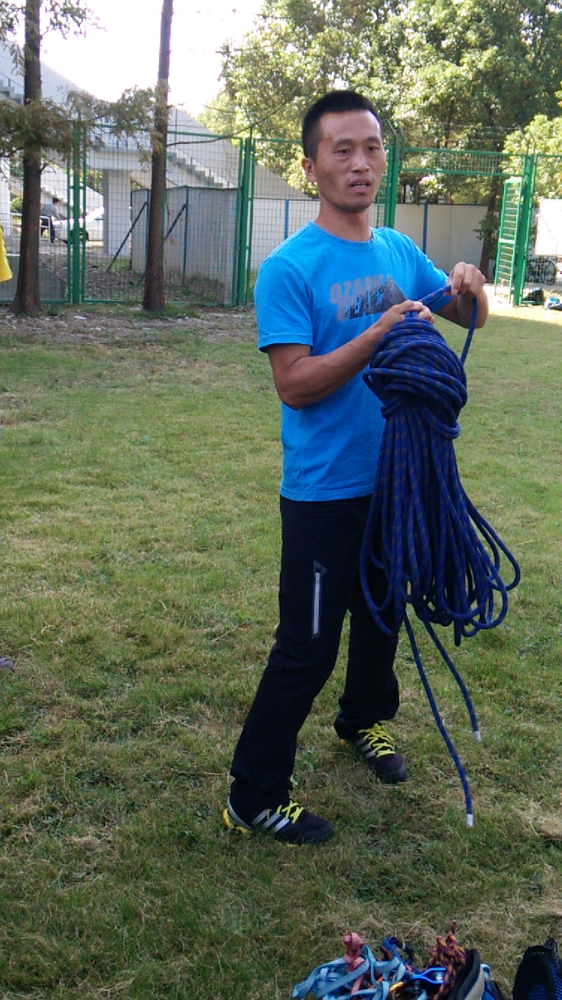
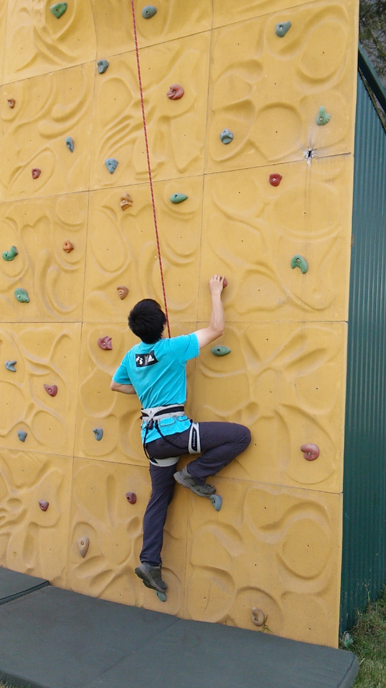
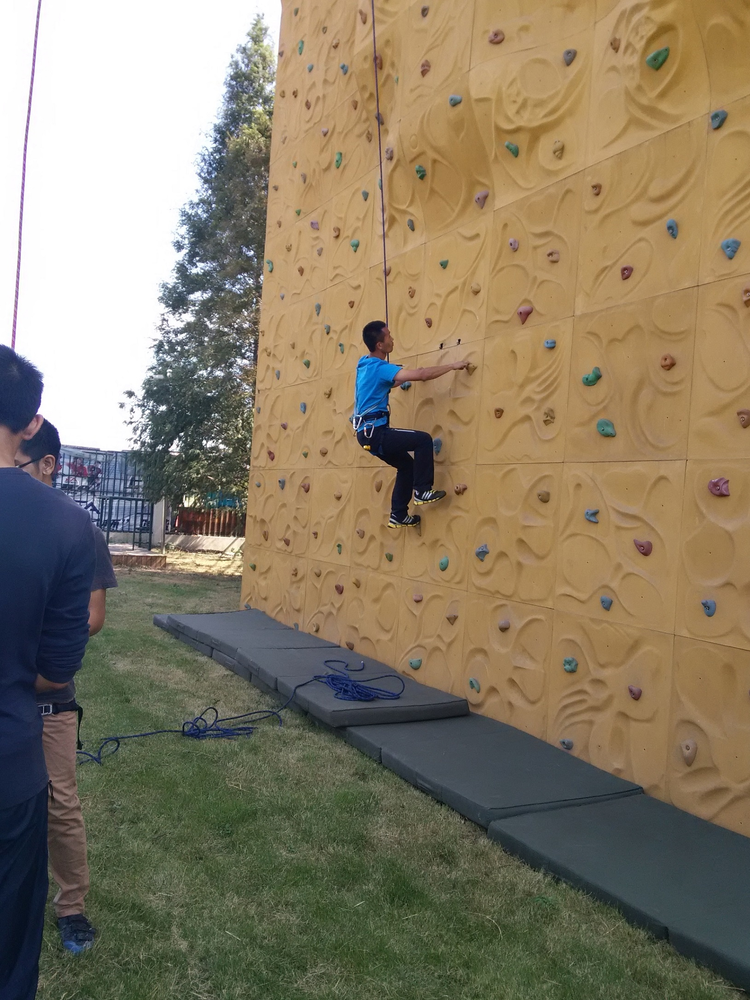
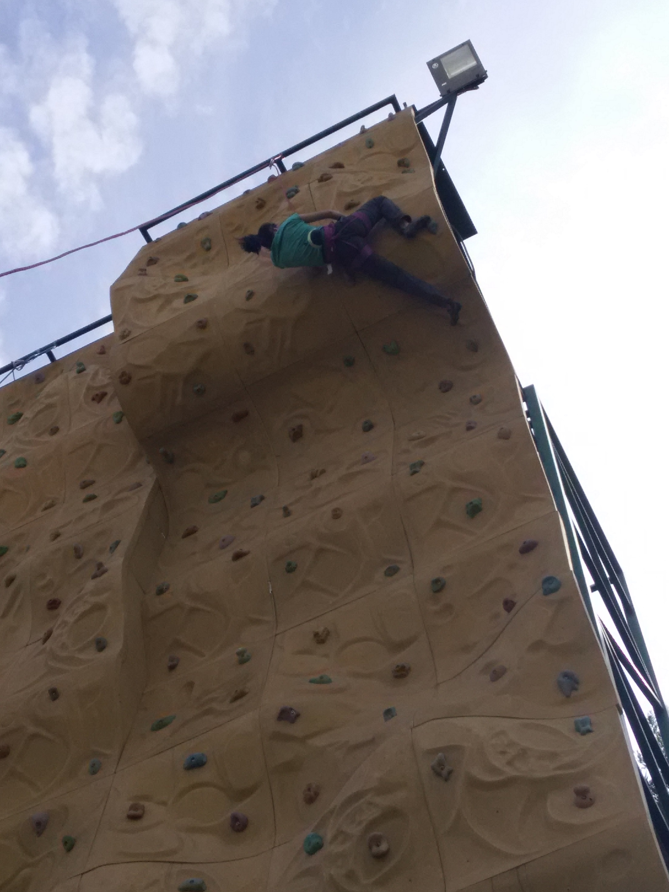

发信人: hemind(hooft), 信区: outdoor
标 题: 【补图】Re: 今天的培训 - 保护站
发信站: 饮水思源 (2015年02月15日13:47:20 星期天)
先上大合照

双绳收绳背起来
screen.width - 200){this.width = screen.width - 200}">
 screen.width - 200){this.width = screen.width - 200}">
screen.width - 200){this.width = screen.width - 200}">
岩壁下方模拟保护站
screen.width - 200){this.width = screen.width - 200}">
抽绳
screen.width - 200){this.width = screen.width - 200}">
开始攀爬
 screen.width - 200){this.width = screen.width - 200}">
screen.width - 200){this.width = screen.width - 200}">
screen.width - 200){this.width = screen.width - 200}">
 screen.width - 200){this.width = screen.width - 200}">
screen.width - 200){this.width = screen.width - 200}">
 screen.width - 200){this.width = screen.width - 200}">
screen.width - 200){this.width = screen.width - 200}">
screen.width - 200){this.width = screen.width - 200}">
screen.width - 200){this.width = screen.width - 200}">
开始收绳了
screen.width - 200){this.width = screen.width - 200}">
大姐大的引体向上
screen.width - 200){this.width = screen.width - 200}">
screen.width - 200){this.width = screen.width - 200}">
screen.width - 200){this.width = screen.width - 200}">
【 在 hemind 的大作中提到: 】
: 就说说上方保护站的建立和拆除
: 建站的装备：60cm扁带套一对（120cm对折也行），O形锁一对（今天用的是一般
: 的大锁），主绳一条
: 自保的装备：安全带一条、两条牛尾
: 1.准备
: 在上岩壁前，先整理好装备，需要做的有，理一遍主绳，检查绳皮是否有明显破损
: ，用手轻轻捏住绳子检查绳芯是否有坏掉，如果弯折绳子时弯折处绳子间空隙太小
: ，绳芯可能已经部分断裂，这时就不要用该绳子建站，并且标记。并且采用双绳收
: 绳从中间开始收，最后两个绳头用来把绳子捆在背上；
: 其他装备都带好，锁扣在安全带装备环上，扁带可以斜挎，这个看个人习惯。
: 2.建站
: 因为只在岩壁的侧面有一条无保护的梯子，所以需要用两牛尾交替保护爬到岩壁顶
: 上。
: 爬上岩壁顶后，首先用牛尾做好自保，大声提醒岩壁下的人要挂绳了，让其离开岩
: 壁下方区域，开始建设保护站。
: 首先将两条短扁带套分别固定在横梁上，需要理好扁带套，不要让其扭曲，两把O形
: 锁锁门相对均扣入两扁带套，拧好丝扣。接着解开主绳，将主绳两绳头一头穿过两
: 把锁、一头不穿过，一起往下放，直到主绳完全放下。最后再检查扁带套是否整齐
: 、O形锁是否扣好。
: 完成建站后可以沿之前的梯子下到地面或者用刚建好的保护站双绳下降，其中细节
: (以下引言省略...)
--
Physics is to math what sex is to masturbation.
※ 来源:·饮水思源 bbs.sjtu.edu.cn·[FROM: 183.223.159.152]
※ 修改:·hemind 于 2015年02月15日13:48:43 修改本文·[FROM: 183.223.159.152]
※ 修改:·hemind 于 2015年02月15日15:19:24 修改本文·[FROM: 183.223.159.152]
|